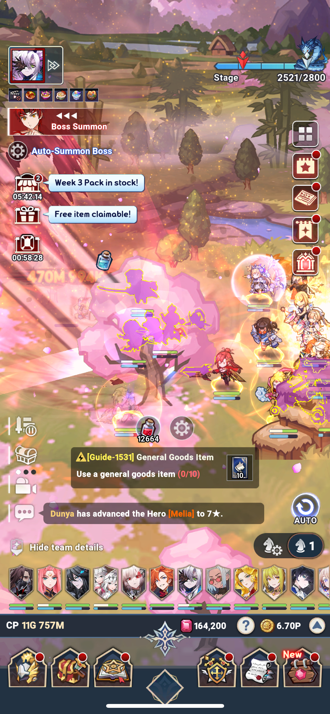

↓Game overview↓
How to play the game:
The idle portion of the game is stage based. Here players gain resources to level up their heroes to be able to fight the stage bosses. The higher a player goes in the stages, the harder the stages get!
Here's a recommended way to play the game:
- Fight through the stages for resources
- Use resources collected to level up heroes
- Fight the stage Boss
- Repeat
NOTE:
If you are unable to beat the boss let the game idle for a while so you can accumulate resources to level up your heroes to be strong enough to beat the boss. Then start repeating the listed process again.
List of other game aspects⤵